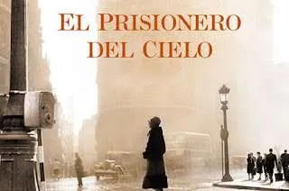

El principito

El Prisionero del Cielo me atrapó desde el principio. Lo que más me gustó fue la amistad entre Daniel y Fermín, que se siente súper real y cercana, y cómo poco a poco se van revelando secretos del pasado que afectan a todos los personajes. La historia mezcla misterio, emociones y un ambiente que te mantiene enganchado.
La novela se mueve entre momentos de tensión y otros más tranquilos, mostrando lo complicada que puede ser la vida de los personajes y cómo las decisiones del pasado repercuten en el presente. Aunque algunos pasajes son más intensos, nunca se hace aburrido; al contrario, te deja con ganas de seguir leyendo.
“A veces se cansa uno de huir... El mundo es muy pequeño cuando no se tiene adónde ir.”
Me gustó mucho cómo Carlos Ruiz Zafón logra que la ciudad de Barcelona sea casi un personaje más. Las calles, la lluvia, los rincones antiguos y misteriosos crean una atmósfera que hace que todo se sienta más vivo y real, como si uno caminara junto a los personajes mientras viven sus aventuras.
“Loco es el que se tiene por cuerdo y cree que los necios no son de su condición.”
El Prisionero del Cielo es un libro intenso pero fácil de leer, con momentos que te emocionan y personajes que se quedan en la memoria. Aunque es más corto que otros de la saga, logra enganchar y preparar todo para el gran final. Definitivamente lo recomiendo si te gustan las historias de amistad, misterio y secretos del pasado.
Gonza:
Lo que más me atrapó fue la forma en que la historia te mantiene pendiente de los secretos del pasado sin sentirse pesada; se lee súper rápido.